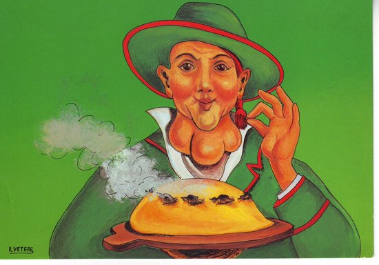
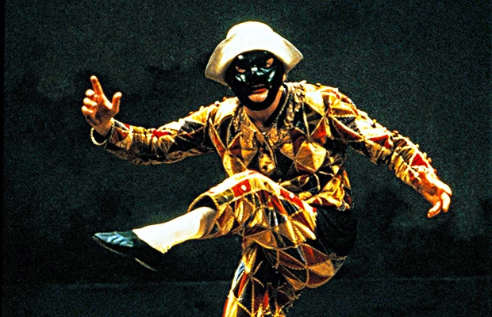
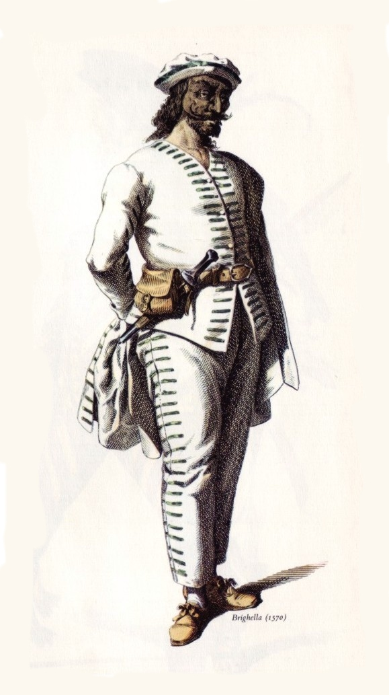

MASCHERE DI CARNEVALE
Lavoro di Virzì Gaia
Gioppino
Paragrafo colore blu VG

Descrizione della maschera di Gioppino
Ha tre grossi gozzi dei quali va molto fiero, tanto da definirli “coralli” oppure “granate”,
indossa un morbido cappello e non si separa mai dal suo bastone.
Gioppino è un contadino rubicondo e buffo, utilizza un linguaggio rozzo e sempliciotto,
ma in realtà è di indole piuttosto scaltra non disdegnando guadagni facili.
Ama il buon vino ed il buon cibo e si dichiara apertamente innamoratissimo della moglie Margì,
dalla quale ha avuto un figlio di nome Brontolì.
Gioppino è una maschera bergamasca che prende vita all’incirca nell’800 partendo da
una tradizione burattinaia che lo eleva a protagonista di varie produzioni per il teatro.
Pulcinella
Paragrafo colore nero VG

Descrizione della maschera di Pulcinella
Servo di indole decisamente furba, Pulcinella si adatta a svariati ruoli e,
tra i vicoli di Napoli, diviene fornaio, mercante,
contadino ed ovviamente anche truffatore e ciarlatano.
È sempre alla ricerca del giusto metodo per guadagnare qualche soldo,
anche se ciò vuol dire ingannare il prossimo,
in fondo è però anche un credulone ed incapace di mantenere il minimo segreto.
Con ogni probabilità Pulcinella è una delle maschere tradizionali italiane più antiche,
la sua origine potrebbe affondare le radici in epoca romana per poi risorgere con il
Teatro dell’Arte e diventare il simbolo della città di Napoli.
Arlecchino
Paragrafo colore rosso VG

Descrizione della maschera di Arlecchino
C’era una volta un bambino bergamasco chiamato Arlecchino,
viveva in povertà con la sua mamma in una piccola casetta.
Per Carnevale la sua scuola organizzò una festa in occasione della quale tutti i bambini
dovevano vestirsi in maschera. Le mamme cucirono splendidi vestiti per i propri bambini
ma non quella di Arlecchino: non aveva i soldi necessari per comprare la stoffa.
Il giorno della festa era ormai prossimo e vedendo Arlecchino così triste,
le mamme degli altri scolari decisero di regalare un pezzo della stoffa dei loro vestiti al bambino.
L’abito di Arlecchino divenne così il più colorato ed originale mai realizzato grazie alla generosità altrui.
Questa che vi abbiamo appena narrato è la favola legata proprio alla maschera di Arlecchino che,
in realtà, affonda le sue radici nell’antica ritualità agricola e prende forma vera e propria
con la Commedia dell’Arte discendendo direttamente da Zanni. Tra le maschere più famose ed amate,
Arlecchino è un servo decisamente pigro ma, al tempo stesso, agile, vivace e dalla battuta pronta,
in alcuni casi persino sboccato; con il suo fare burlone e scapestrato si ingegna nell’architettare
truffe e imbrogli destando sempre una certa simpatia visti i continui fallimenti incontrati.
Brighella
Paragrafo colore verde VG

Descrizione della maschera di Brighella
Proprio come Arlecchino, anche Brighella è nato a Bergamo ed è qui che diviene un servo astuto,
opportunista e senza scrupoli. Come suggerisce il suo stesso nome è un attaccabrighe,
bugiardo come pochi e sempre intento ad escogitare inganni e frodi per raggirare il prossimo.
Brighella è inoltre un abile musicista, cantante e ballerino, si destreggia perfettamente
in diversi ruoli, cambiando spesso anche mestiere, ed è perennemente al centro di intrighi e complotti.
La maschera di Brighella deriva anch’essa dal celebre volto dello Zanni e,
tra i personaggi principi della Commedia dell’Arte, si evolve ulteriormente fino
al settecento quando il teatro lo trasforma in un fedele domestico attento ai desideri del padrone.